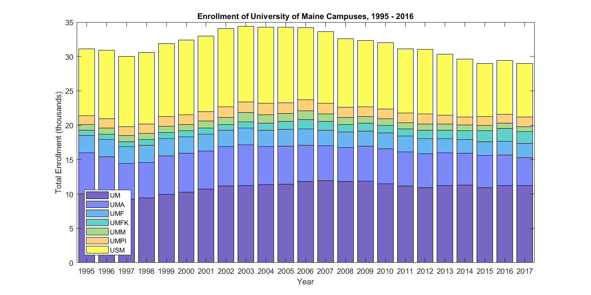
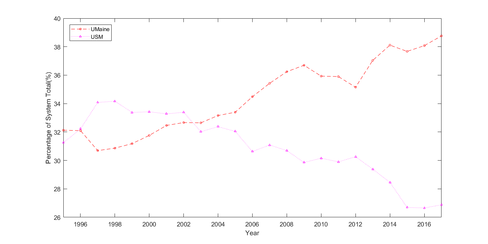
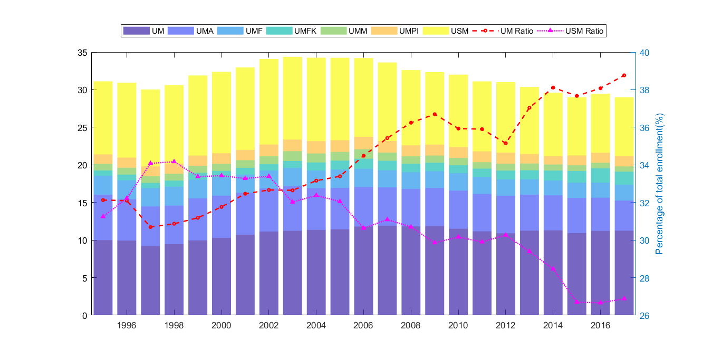
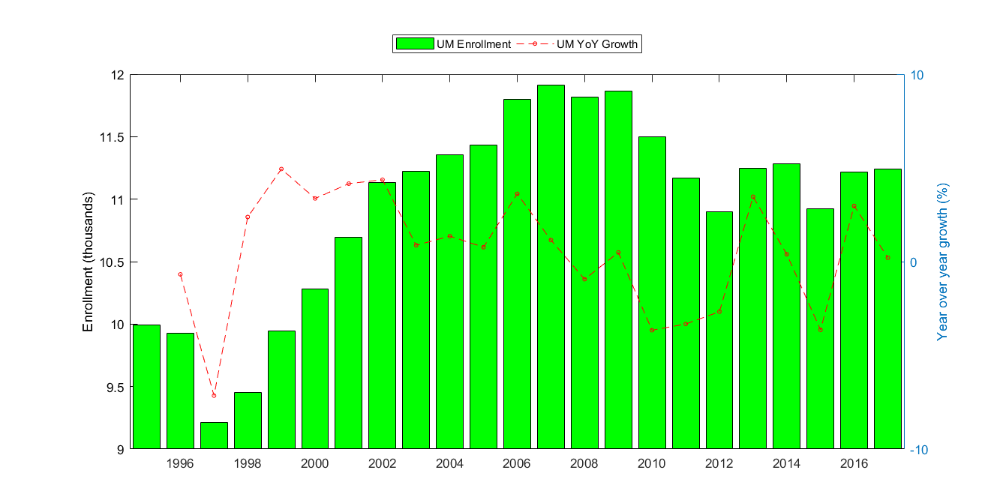

clear
clc
enrollment = [
1995 1996 1997 1998 1999 2000 2001 2002 2003 2004 2005 2006 2007 2008 2009 2010 2011 2012 2013 2014 2015 2016 2017
9996 9928 9213 9451 9945 10282 10698 11135 11222 11358 11435 11797 11912 11818 11867 11501 11168 10901 11247 11286 10922 11219 11240
6023 5496 5248 5130 5612 5617 5575 5722 5943 5538 5494 5257 5101 4974 5054 5074 4974 4990 4770 4664 4683 4416 4014
2510 2512 2446 2507 2479 2413 2435 2395 2420 2349 2452 2424 2265 2227 2238 2322 2269 2179 2061 1960 2016 2000 2080
731 767 690 827 926 886 897 827 924 1076 1193 1339 1269 1102 1126 1073 1080 1169 1209 1327 1559 1904 1760
856 915 884 899 908 927 1017 1068 1313 1191 1149 1259 1093 1023 964 951 863 925 892 810 786 745 701
1278 1347 1307 1344 1378 1427 1367 1560 1546 1652 1548 1655 1533 1455 1436 1434 1453 1463 1263 1138 1289 1326 1408
9721 9966 10230 10462 10645 10820 10966 11382 11007 11089 10974 10478 10453 10009 9655 9654 9301 9385 8923 8428 7739 7855 7794
];
figure(1)
set(gcf, 'units', 'points', 'position',[400,150,800,400])
year = enrollment(1,:);
enrolled = enrollment([2:8],:)';
bar(year, enrolled/1000, 'stacked')
alpha(0.7)
title('Enrollment of University of Maine Campuses, 1995 - 2016')
xlim([1994.5 2017.5])
xticks(1995:1:2017)
xlabel('Year')
ylabel('Total Enrollment (thousands)')
legend('UM', 'UMA', 'UMF', 'UMFK', 'UMM', 'UMPI', 'USM', 'Location', 'southwest')
figure(2)
set(gcf, 'units', 'points', 'position',[400,150,800,400])
hold on
box on
totalPerYear = sum(enrollment([2:8], :));
totalUM = enrollment(2, :)*100;
totalUSM = enrollment(8, :)*100;
plot(year, (totalUM./totalPerYear), '--or', 'MarkerSize', 3)
plot(year, totalUSM./totalPerYear, ':^m', 'MarkerSize', 3)
xlim([1995 2017])
xlabel('Year')
ylabel('Percentage of System Total(%)')
legend('UMaine', 'USM', 'Location', 'northwest')
figure(3)
set(gcf, 'units', 'points', 'position',[400,150,800,400])
hold on
box on
bar(year, enrolled/1000, 'stacked', 'EdgeColor', 'none')
alpha(0.7)
xlim([1994.5 2017.5])
xticks(1996:2:2017)
yyaxis right
plot(year, (totalUM./totalPerYear), '--or', 'MarkerSize', 3, 'LineWidth', 1.5)
plot(year, totalUSM./totalPerYear, ':^m', 'MarkerSize', 3, 'LineWidth', 1.5)
ylabel('Percentage of total enrollment(%)')
legend('UM', 'UMA', 'UMF', 'UMFK', 'UMM', 'UMPI', 'USM', 'UM Ratio', 'USM Ratio','Orientation','horizontal','Location', 'northoutside')
figure(4)
set(gcf, 'units', 'points', 'position',[400,150,800,400])
hold on
box on
enrollmentUM = enrollment(2,:);
bar(year, enrollmentUM/1000, 'green')
ylim([9 12])
xlim([1994.5 2017.5])
xticks(1996:2:2017)
ylabel('Enrollment (thousands)')
yyaxis right
ylim([-10 10])
yticks(-10:10:10)
ylabel('Year over year growth (%)')
percentGrowth = diff(enrollment(2,:));
percentGrowth = [NaN; percentGrowth(1:end)'];
plot(year, percentGrowth/100, '--or', 'MarkerSize', 3)
legend('UM Enrollment', 'UM YoY Growth', 'Orientation', 'horizontal', 'Location', 'northoutside')
   